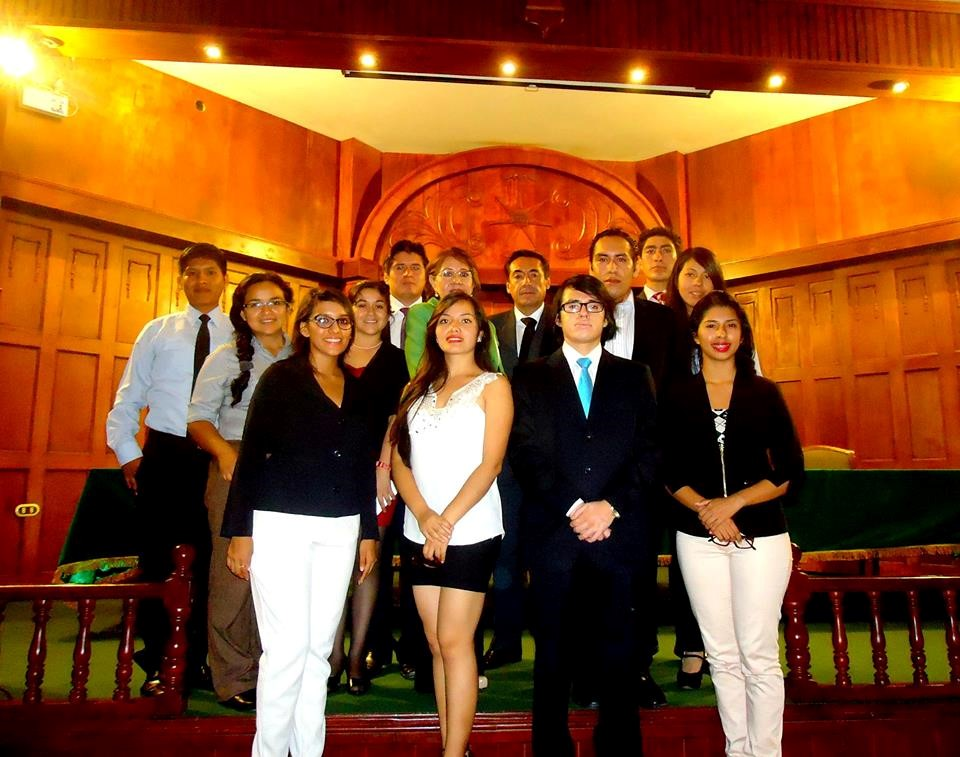
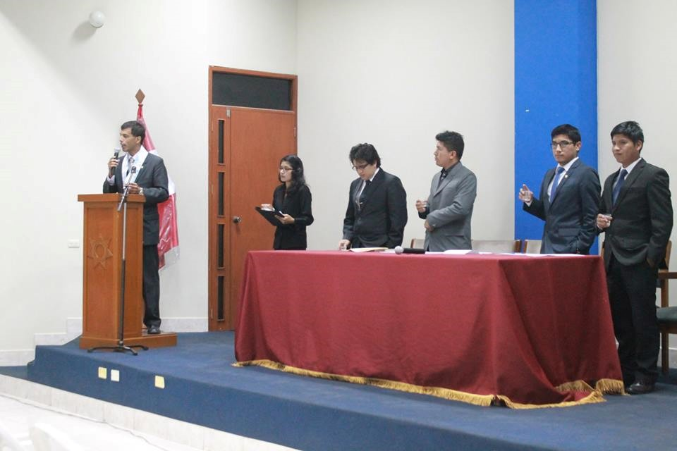
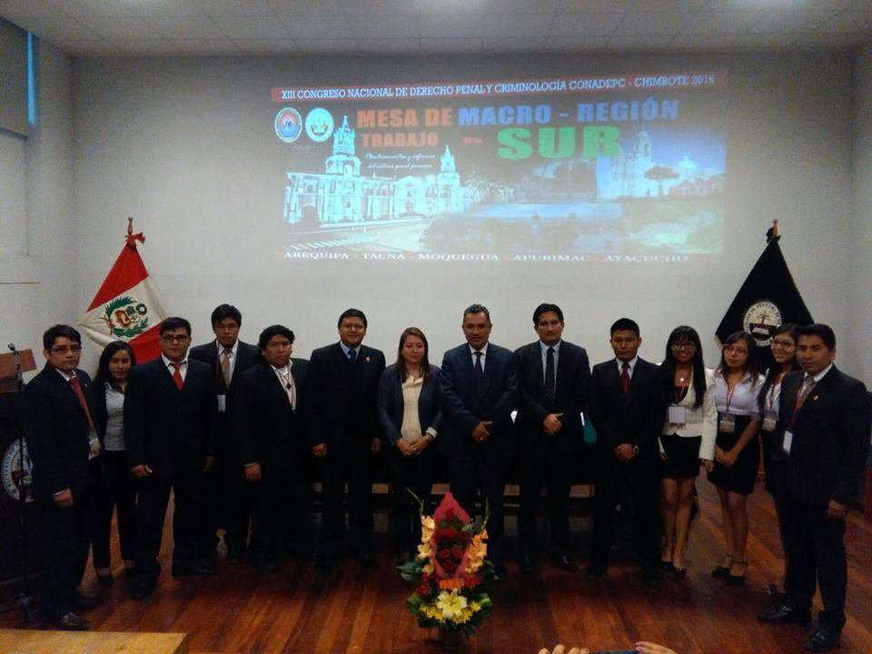

Las mesas de trabajo para la elaboración de los ante-proyectos de ley es una actividad complementaria dentro del Conadepc Perú-Chimbote 2016, el cual tiene como ejes temáticos los Delitos Contra la Administración Pública y Criminalidad Organizada, fenómenos criminales que ha marcado una notoria presencia en nuestro país en general y a la región Ancash en particular.
La finalidad de las mesas de trabajo radica en lo siguiente:
- Consolidar los espacios de debate y discusión científica generados por el CONADEPC.
- Plasmar los conocimientos dogmáticos y jurídicos adquiridos en materia de derecho penal, derecho procesal penal y criminología a través de una iniciativa legislativa.
- Cooperar activamente con ante-proyectos de ley a nuestro sistema penal peruano.
- Generar en las diferentes zonas semilleros de estudiantes investigadores.
Esta actividad académica tiene como objetivo general:
- Generar un espacio de debate de la Ciencia Global del Derecho Penal, para exponer ante-proyectos de ley a la problemática abarcada.
Y como objetivo específico:
- Proponer la creación, modificación, derogación o contra proyecto de ley, de una ley circunscrita al ámbito Penal, Procesal Penal y Criminología o que indirectamente tenga repercusiones en estos ámbitos (por ser el complemento de una ley abierta, en blanco o complete el carácter normativo de un elemento del tipo penal, etc.,), en aras de mejorar nuestro sistema penal Peruano, y que la propuesta redunde en eficacia y efectividad en la aplicación y utilidad en nuestra sociedad.
La Organización del XIII Congreso Nacional de Derecho Penal y Criminología – Perú, gestiona este proyecto para ser canalizado y Organizado por los estudiantes y egresados del CONADEPC PERÚ. Tal es así, que cada mesa de trabajo (6 mesas en todo el Perú) cuenta con dos responsables legitimados para impulsar la elaboración del ante-proyecto de ley. Siendo estos los que darán cuenta de su respectivo ante proyecto de ley ante la Asamblea de Delegados en Chimbote.
Las mesas de trabajo a nivel nacional están conformadas en base de zonas, siendo un total de 06 mesas de trabajo (zonas) en todo el Perú, cada zona lo integran los estudiantes y egresados de Derecho de las Universidades de las Regiones en base a criterios geográficos o de cercanía territorial de las Regiones.
A continuación damos a conocer las 6 zonas:
- Zona 01: Regiones: Tumbes, Piura, Cajamarca, Lambayeque y la Libertad.
- Zona 02: Regiones: Amazonas, San Martín, Loreto y Ucayali.
- Zona 03: Regiones: Ancash, Huánuco y Cerro de Pasco.
- Zona 04: Regiones: Lima, Ica, Junín y Huancavelica.
- Zona 05: Regiones: Madre de Dios, Cusco y Puno.
- Zona 06: Regiones: Ayacucho, Apurímac, Arequipa, Moquegua y Tacna.
Instalación Mesa de Trabajo - Zona N° 1
Conformada por las regiones: Tumbes, Piura, Cajamarca, Lambayeque y la Libertad. Instalación que se realizó en la ciudad de Trujillo a cargo de sus responsables: Leslie Roxana Gonzales Cabanillas - estudiante de la Universidad Nacional de Trujillo- y Santiago Arturo Gutiérrez Rodríguez - egresado de la Universidad Nacional de Trujillo- y con la presencia de dos de sus asesores: Dr. Cesar Augusto Alva Florián y Dra. Mery Elizabeth Robles Briceño.
Instalación de la Mesa de Trabajo de la Zona N° 3
Conformada por las regiones: Ancash, Pasco y Huánuco. Instalación que se realizó en la ciudad de Chimbote a cargo de sus responsables: Rafael Elías Josué Pinday Fiestas– Alumno de la Escuela Profesional de Derecho de la Universidad San Pedro de Chimbote y Dante Heredia Obregón – Egresado de la Escuela Profesional de Derecho y Ciencias Políticas de la Universidad Nacional Santiago Antúnez de Mayolo- con la presencia de sus asesores: Joel Córdova Rojas y Estuardo Montero Cruz, y de la encargada de las mesas de trabajo de todo el Perú- miembro de la Comisión Organizadora del Conadepc Perú-Chimbote 2016, Srta. Carol Jimena Ramírez Acosta.
Instalación de la Mesa de Trabajo de la Zona N° 6
Macro Región Sur, conformada por estudiantes y egresados de Derecho de las Universidades de las Regiones de Arequipa, Tacna, Moquegua, Apurímac y Ayacucho. La sesión de instalación se desarrolló con la presencia del Sr. Presidente de la Corte Superior de Justicia de Arequipa. Representantes de la Junta de Fiscales Superiores de Arequipa. Asesores del Conadepc. Docentes y estudiantes de la UNSA.
